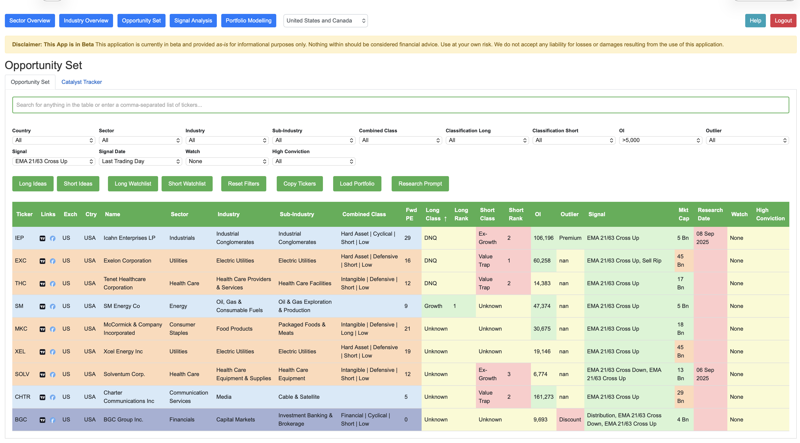
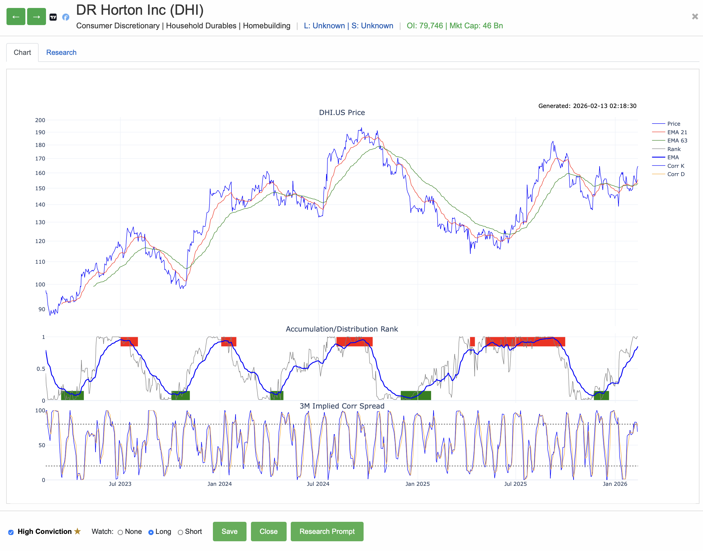
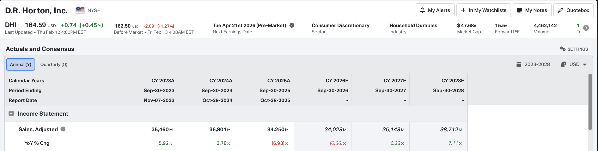
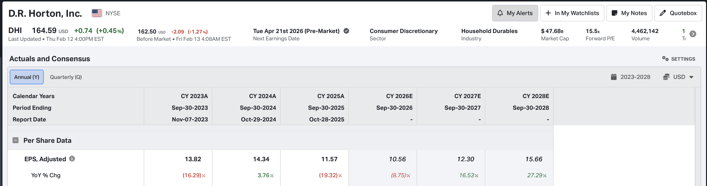

Recursa's Guide To Trading
How to build a long/short portfolio with non-correlated trade ideas using Equity Lab
Learn how to lose
No trader, not even the best in the world get every call right.
If you even get 60% right, that's pretty good.
It's not enought to be right though, you have to get paid more when you are right.
Imagine you are right 2 times out of 3 and make 10% percent each trade, but then on the 3rd trade you lose 50% of your money.
Obviously, this is a losing situation.
To increase your wealth, need to be more profitable when you're right than you are unprofitable when you're wrong.
This is called the expectancy of your system or style is the average amount you can expect to win or lose per trade, and it's defined arithmetically as follows:
Expectancy = (Win% Avg Win) - (Loss% Avg Loss)
The important thing to understand here is in order to keep your average loss smaller than your average win, you need to cut your losses quickly and let your winners run.
There are psychological reasons for why this is difficult for human beings to do, and this is important, if you cannot learn how to do this then you will never make money regardless of what system or setup you use.
The best resource I have found on this topic is Best Loser Wins by Tom Hougaard
The best advice I can give you to start with is take a read of that book, it will help with your daily preparation and understanding the psychological challenges you will face, and how to address them.
Build a long/short portfolio with non-correlated trade ideas
A long/short equity portfolio is a classic portfolio that allows you to take advantage of both rising and falling markets.
By going long on undervalued stocks and short on overvalued ones, you can potentially profit in any market condition.
The key is to find non-correlated trade ideas, which means that the performance of one stock does not directly affect the other.
This helps to reduce risk and increase the chances of consistent returns.
How do you do this? Well this is where Equity Lab comes into the picture.
Use Equity Lab to generate your trade ideas
Follow this process on a daily basis:
Go to the Opportunities tab in Equity Lab, and click on the Long Ideas/Short Ideas buttons.
The default filter uses thea 12/63 ema cross technical signal.
This is good enough to define the general trend of the market you are trading.

Click on one of the stocks in the list that appears.
Notice here you have red and green accumulation and distribution signals.
This shows you how much buying or selling pressure is being applied to a stock.
When the buying or selling is exhausted, it often indicates a potential reversal in the trend of the price.
I like to use the 23/63 cross for confirmation of trend, but I also want to see buying or selling pressure.
Use the green arrows to cycle through the different stocks on the list.

Charts aren't enough, it's better if you know more about a company before you trade it, so now its time to do research on the company's fundamentals.
I do this in two steps, one thing I do is look up the stock in Koyfin, but you can use any fundamental research tool.
Look for the estimates and actuals of top line (sales) and bottom line (earnings) growth.
This doesn't predict the future, but it helps you understand what the market expects from a company.


The second step is to click on the Research Prompt button, this give you an AI prompt to help you research the company's fundamentals.
Just paste this into an AI engine to generate a deep research report.
Again, the research report doesn't predict the future, but it will give you a lot of information about the company that you can use to make a more informed decision.
In fact, the only thing that can predict the future is you; you are the trader, you make the decisions, and these need to be based on your understanding of the world, the economy, and the market you are trading.
The research report is just a tool to help you make better decisions.
One final thing you can do is check the accumulation/distribution for similar stocks in the sector/indystry group.
This can give you a sense of the overall trend in the sector/industry, and help you confirm your trade idea.
Use the sector/industry filters to find stocks in the group.
Once you have done your research and you think the idea is promising, click the watchlist checkbox to add it to your watchlist.
There is also another technical filter for buying dips and selling dips, you can use this to filter your trade ideas or watchlists also.
A shorter term timing tool is included, this is the 3 month implied correlation spread series you can see underneath the accumulation/distribution chart.
The way I build my portfolio is to put on half positions initially based on levels or techicals, you can do this however you want.
Then, if they start working I'll double up to a full position.
I use the 3 month implied correlation spread to lean long or short over the whole portfolio, when it reaches a high and turns down I'll lean short, and when it reaches a low and turns up I'll lean long.
Ensure your trade ideas are not correlated
You can do this by using the portfolio analysis tool.
Enter your tickers here and it will calculate the correlation matrix and portfolio volatility metrics.
I target an annualized underlying portfolio volatility of 20%, no more than 30%
Summary
Follow the proces on a daily basis, spend an hour or so.
Look for ideas, research ideas, build a portfolio of non-correlated ideas, lean long or short when necessary, get rid of the losers, add to the winners, bang out the profits over and over.
It takes practise and over time you will become more experienced and better at making decisions.
I've given you the tools, it's up to you to use them effectively.
Final step: susbcribe to give me 20 bucks a month
You might as well. You are probably a degen gambler anyway.
That's not so bad, everybody who likes markets are in a way.
With Equity Lab you'll have a fighting chance, and that plus hard work is what you need.
Good luck!!
Our Features
Clean Code
Built with modern HTML5 and Tailwind CSS for a highly maintainable and scalable structure.
Vibrant Palette
A carefully selected color scheme that is energetic, modern, and professional.
Fully Responsive
Looks great on all devices, from mobile phones to desktop monitors, thanks to responsive design.
Get In Touch
Have questions? We'd love to hear from you. Reach out to us anytime.
Contact Us